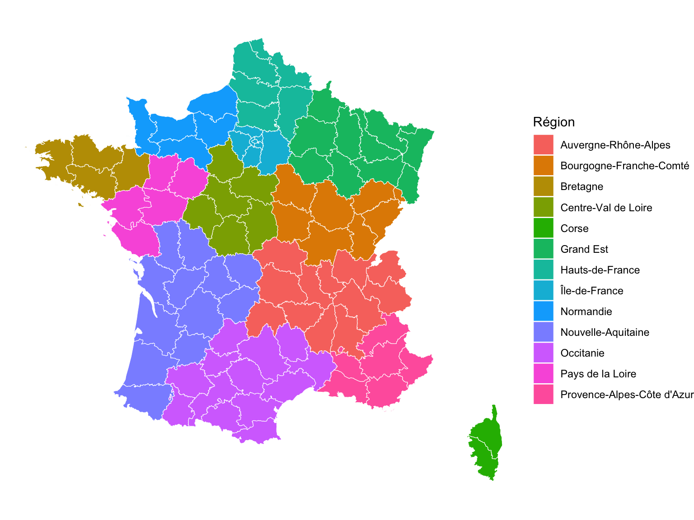
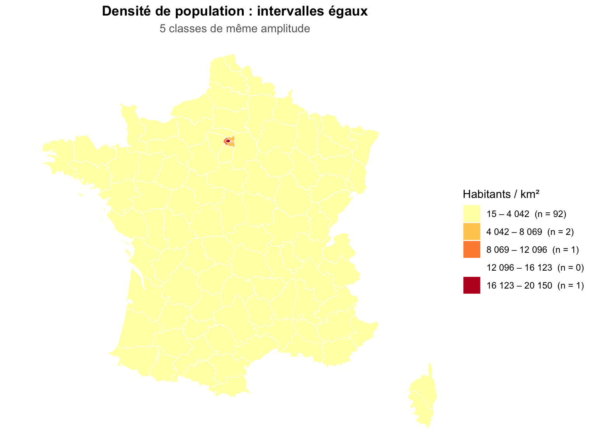
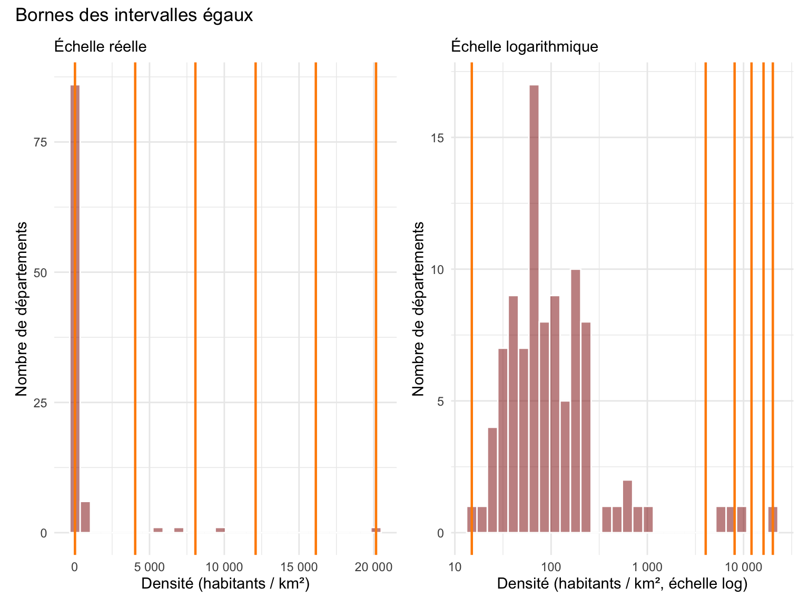
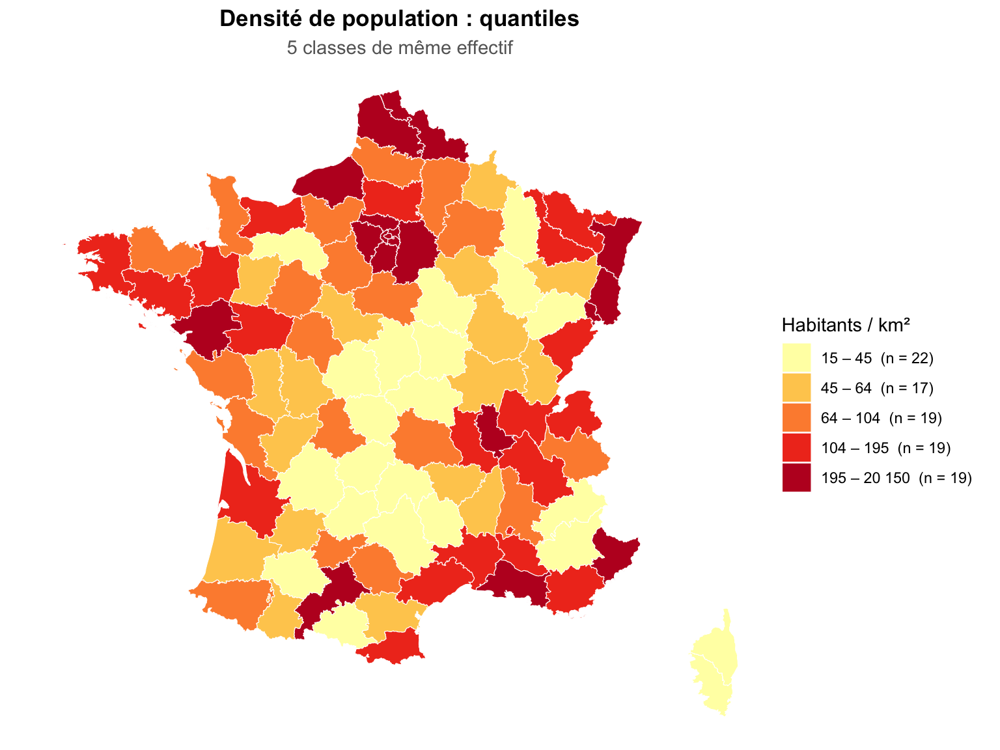
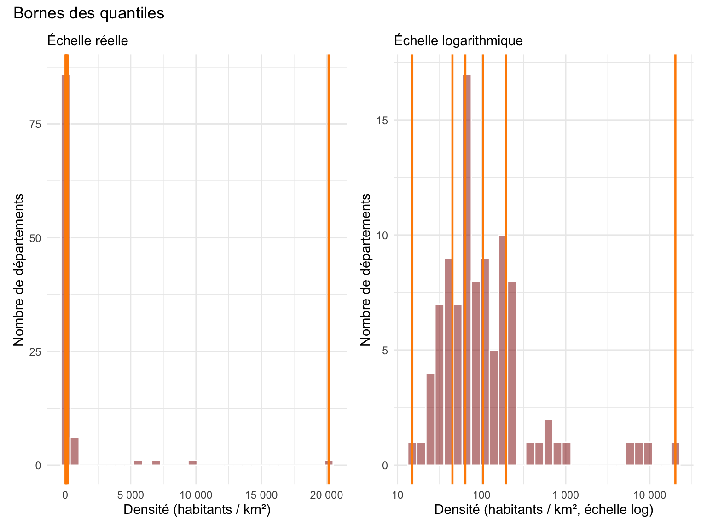
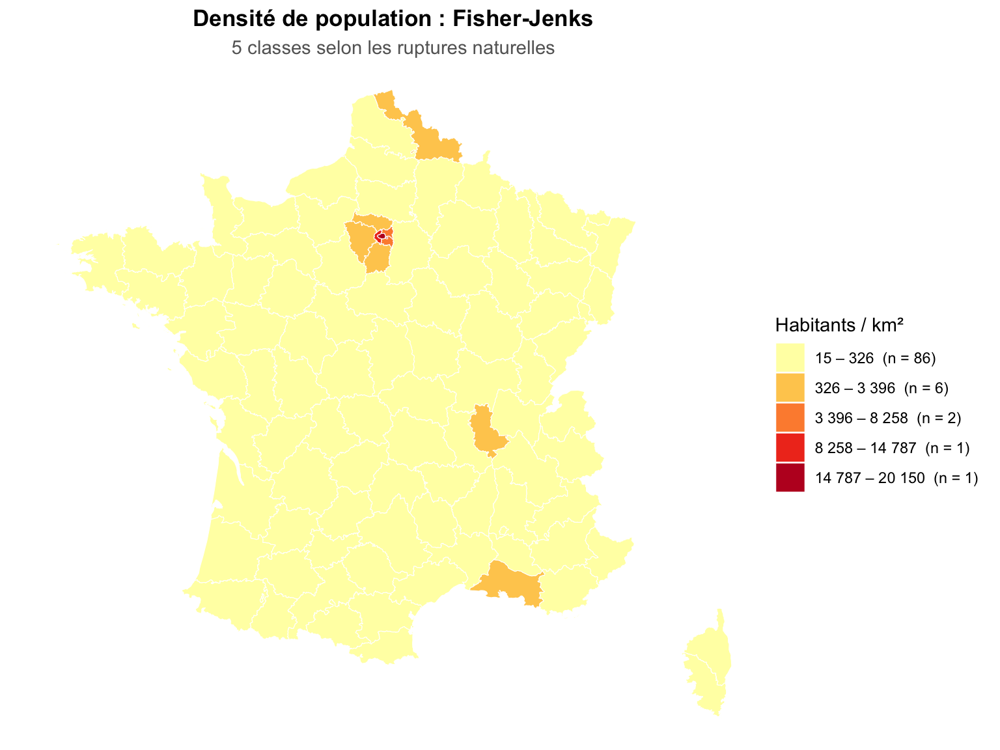
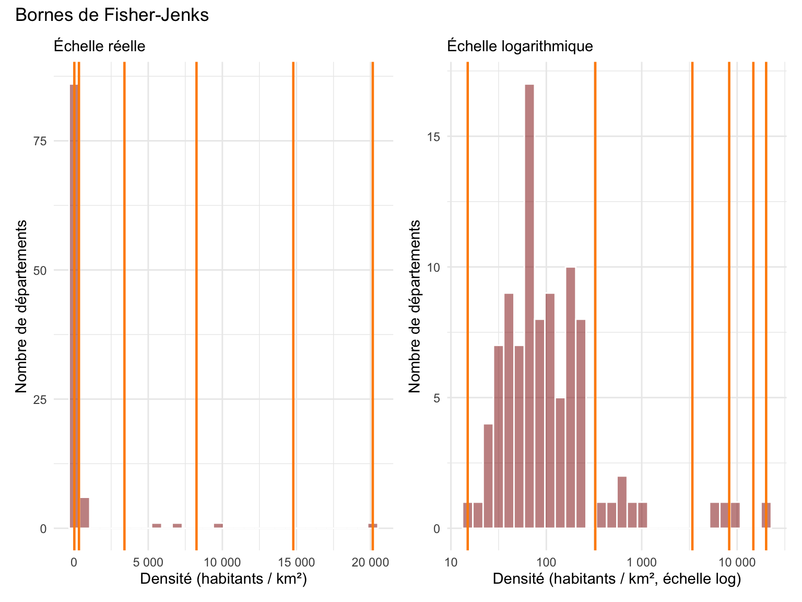
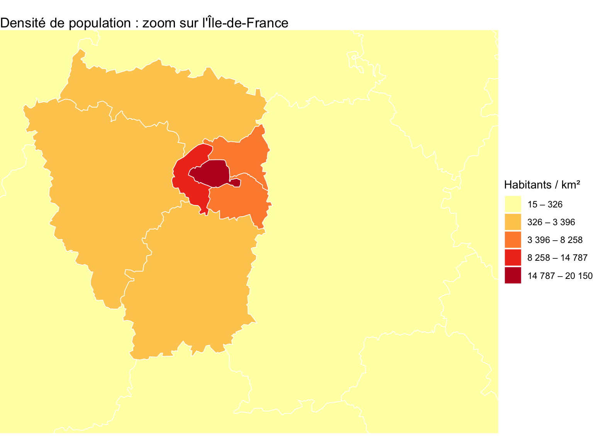
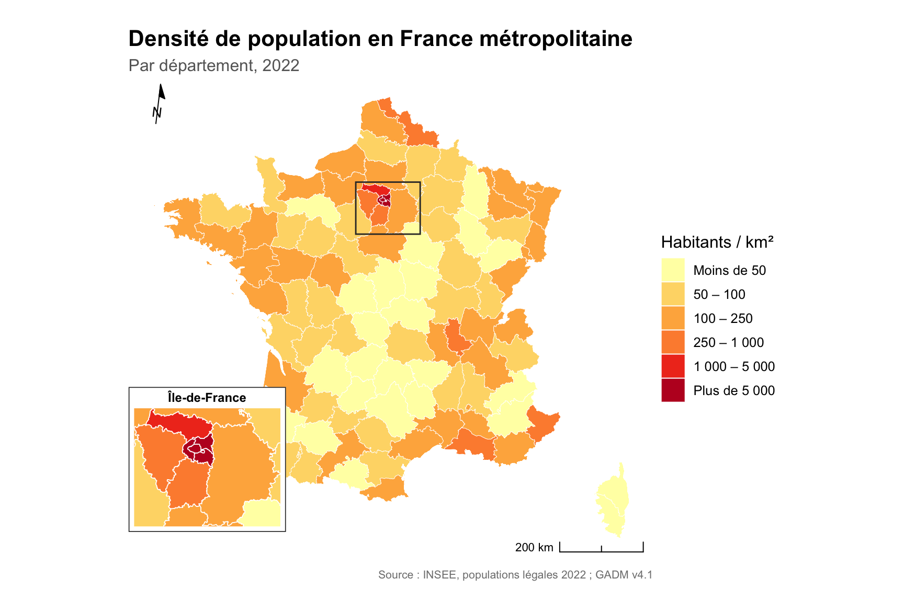
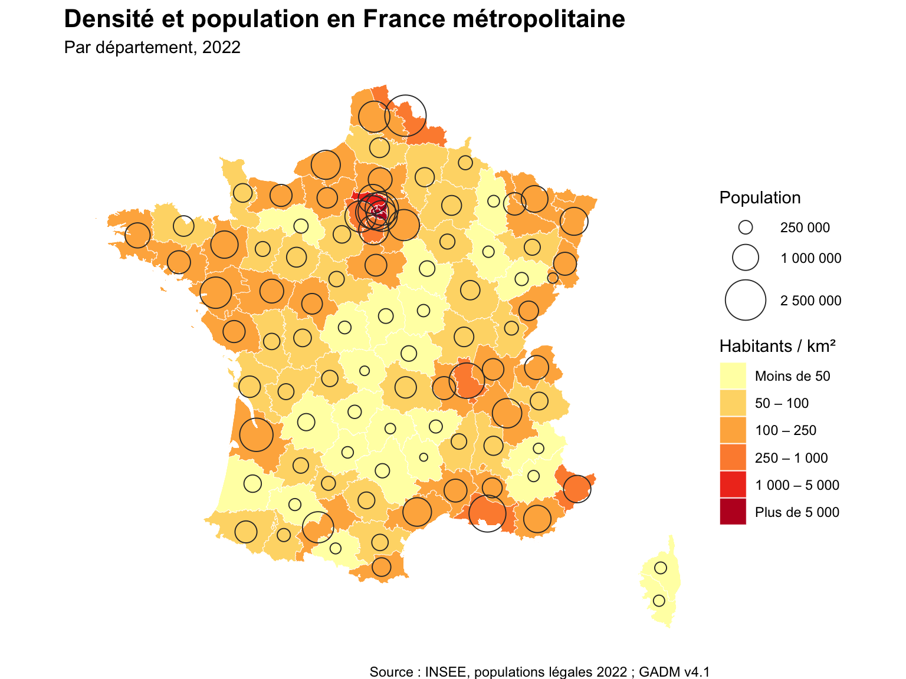

# 'sf' (Simple Features) : manipulation de données spatiales
library(sf)
# 'tidyverse' : ensemble de packages pour la manipulation et la visualisation de données
library(tidyverse)
# 'readr' : lecture rapide de fichiers CSV
library(readr)
# 'RColorBrewer' : palettes de couleurs adaptées à la cartographie
library(RColorBrewer)
# 'classInt' : calcul des classes (intervalles égaux, quantiles, Fisher-Jenks...)
library(classInt)
# 'patchwork' : assembler plusieurs graphiques côte à côte
library(patchwork)
# 'ggspatial' : flèche du nord et échelle
library(ggspatial)Choroplèthes France
Installation des packages
Avant de cartographier, chargeons les packages nécessaires :
Tip
patchwork et ggspatial ne sont pas installés par défaut : install.packages(c("patchwork", "ggspatial")) si besoin.
Données
Nous allons travailler sur la densité de population des départements de France métropolitaine. Il nous faut deux sources :
- Les contours des départements : fichier GADM v4.1, déjà présent dans le dossier
data/France/gadm41_FRA_shp/. Le niveau 2 (gadm41_FRA_2.shp) correspond aux 96 départements métropolitains. - La population : les populations légales 2022 de l’INSEE (recensement de la population), que nous téléchargeons directement depuis R.
NoteChemins des fichiers
Ouvrez le projet en double-cliquant sur le fichier .Rproj. Le répertoire de travail est alors la racine du projet, et tous les chemins commencent par data/.... Pour vérifier où vous êtes : getwd().
Les contours des départements
dep <- read_sf("data/France/gadm41_FRA_shp/gadm41_FRA_2.shp")Avant d’aller plus loin, vérifiez le CRS de l’objet sf ainsi que le contenu du tableau.
TipRéponse
st_crs(dep)Coordinate Reference System:
User input: WGS 84
wkt:
GEOGCRS["WGS 84",
DATUM["World Geodetic System 1984",
ELLIPSOID["WGS 84",6378137,298.257223563,
LENGTHUNIT["metre",1]]],
PRIMEM["Greenwich",0,
ANGLEUNIT["degree",0.0174532925199433]],
CS[ellipsoidal,2],
AXIS["latitude",north,
ORDER[1],
ANGLEUNIT["degree",0.0174532925199433]],
AXIS["longitude",east,
ORDER[2],
ANGLEUNIT["degree",0.0174532925199433]],
ID["EPSG",4326]]head(dep)Simple feature collection with 6 features and 13 fields
Geometry type: MULTIPOLYGON
Dimension: XY
Bounding box: xmin: 2.062914 ymin: 44.11572 xmax: 6.168451 ymax: 46.80387
Geodetic CRS: WGS 84
# A tibble: 6 × 14
GID_2 GID_0 COUNTRY GID_1 NAME_1 NL_NAME_1 NAME_2 VARNAME_2 NL_NAME_2 TYPE_2
<chr> <chr> <chr> <chr> <chr> <chr> <chr> <chr> <chr> <chr>
1 FRA.1.… FRA France FRA.… Auver… NA Ain NA NA Dépar…
2 FRA.1.… FRA France FRA.… Auver… NA Allier Basses-A… NA Dépar…
3 FRA.1.… FRA France FRA.… Auver… NA Ardèc… NA NA Dépar…
4 FRA.1.… FRA France FRA.… Auver… NA Cantal NA NA Dépar…
5 FRA.1.… FRA France FRA.… Auver… NA Drôme NA NA Dépar…
6 FRA.1.… FRA France FRA.… Auver… NA Haute… NA NA Dépar…
# ℹ 4 more variables: ENGTYPE_2 <chr>, CC_2 <chr>, HASC_2 <chr>,
# geometry <MULTIPOLYGON [°]>Les données sont en coordonnées géographiques (WGS 84, EPSG:4326), en degrés. Pour calculer des surfaces en m², il faut les projeter dans un système métrique. Pour la France métropolitaine, le système de référence est le Lambert 93 (EPSG:2154).
dep <- st_transform(dep, 2154)La population (INSEE)
# Télécharger le fichier une seule fois
options(timeout = 300)
if (!file.exists("data/France/pop2022.zip")) {
download.file("https://www.insee.fr/fr/statistiques/fichier/8290591/ensemble.zip",
"data/France/pop2022.zip", mode = "wb")
}
unzip("data/France/pop2022.zip", exdir = "data/France/pop2022")
# Quels fichiers contient l'archive ?
list.files("data/France/pop2022")[1] "donnees_arrondissements.csv" "donnees_cantons.csv"
[3] "donnees_collectivites.csv" "donnees_communes_deleguees.csv"
[5] "donnees_communes.csv" "donnees_departements.csv"
[7] "donnees_fractions_cantonales.csv" "donnees_regions.csv"
[9] "metadonnees.csv" # On garde le code département en texte : "01", "2A", "2B"...
pop <- read_delim("data/France/pop2022/donnees_departements.csv",
delim = ";",
col_types = cols(DEP = col_character()))
head(pop)# A tibble: 6 × 9
REG Région DEP Département NBARR NBCAN NBCOM PMUN PTOT
<chr> <chr> <chr> <chr> <dbl> <dbl> <dbl> <dbl> <dbl>
1 84 Auvergne-Rhône-Alpes 01 Ain 4 23 392 6.71e5 6.87e5
2 32 Hauts-de-France 02 Aisne 5 21 798 5.26e5 5.37e5
3 84 Auvergne-Rhône-Alpes 03 Allier 3 19 317 3.35e5 3.43e5
4 93 Provence-Alpes-Côte d… 04 Alpes-de-H… 4 15 198 1.67e5 1.72e5
5 93 Provence-Alpes-Côte d… 05 Hautes-Alp… 2 15 162 1.42e5 1.46e5
6 93 Provence-Alpes-Côte d… 06 Alpes-Mari… 2 27 163 1.11e6 1.13e6Les principales variables que nous utiliserons :
CC_2(GADM) etDEP(INSEE) : le code du département ("01","2A","75"…), qui sert de clé de jointureNAME_1(GADM) : la région à laquelle appartient le départementNAME_2(GADM) : le nom du départementPMUN(INSEE) : la population municipale en 2022PTOT(INSEE) : la population totale (population municipale + population « comptée à part »)NBCOM,NBCAN,NBARR(INSEE) : le nombre de communes, de cantons et d’arrondissements
Jointure et calcul de la densité
Une population brute n’est pas une bonne variable pour une carte choroplèthe : les grands départements paraîtraient « importants » simplement parce qu’ils sont grands. On calcule donc une densité (habitants par km²).
dep <- dep %>%
left_join(pop, by = c("CC_2" = "DEP")) %>%
mutate(
surface_km2 = as.numeric(st_area(geometry)) / 1e6, # m² -> km²
densite = round(PMUN / surface_km2)
)Vérifiez que la jointure a fonctionné : combien de départements n’ont pas de population ?
TipRéponse
sum(is.na(dep$densite))[1] 0# Les départements les plus et les moins denses
dep %>%
st_drop_geometry() %>%
select(NAME_2, densite) %>%
arrange(desc(densite)) %>%
slice(c(1:5, 92:96))# A tibble: 10 × 2
NAME_2 densite
<chr> <dbl>
1 Paris 20150
2 Hauts-de-Seine 9424
3 Seine-Saint-Denis 7091
4 Val-de-Marne 5778
5 Val-d'Oise 1014
6 Cantal 25
7 Hautes-Alpes 25
8 Alpes-de-Haute-Provence 24
9 Creuse 21
10 Lozère 15Le résultat doit être 0. Si certains départements sont NA, comparez dep$CC_2 et pop$DEP : les codes doivent être écrits exactement de la même façon.
Nous sommes prêts à cartographier !
Nous utilisons ggplot2 dans tout le module (documentation ici). Il existe d’autres bonnes options pour la cartographie thématique en R, comme tmap (ici) ou mapsf (ici), mais nous restons sur ggplot2 par cohérence avec le reste du cours.
Valeurs uniques
Une carte choroplèthe pour une variable qualitative attribue simplement une couleur différente à chaque modalité. Les variables peuvent être nominales ou ordinales.
Nominale : les modalités sont des catégories sans ordre ni hiérarchie, par exemple « pomme », « banane », « orange ».
Ordinale : les modalités ont un ordre significatif, par exemple « faible », « moyen », « élevé ».
Pour l’illustrer, cartographions la région à laquelle appartient chaque département (NAME_1). C’est une variable nominale : il n’y a pas de hiérarchie entre la Bretagne et l’Occitanie. geom_sf dessine les géométries et fill indique la variable qui remplit les polygones.
ggplot(data = dep) +
geom_sf(aes(fill = NAME_1), color = "white", linewidth = 0.2) +
labs(fill = "Région") +
theme_void()
Intervalles égaux
Pour représenter un phénomène continu, il faut choisir comment transformer chaque valeur en couleur. Une première solution est la méthode des intervalles égaux : on découpe l’étendue de la distribution (l’écart entre le minimum et le maximum) en classes de même amplitude, et on attribue à chacune une couleur d’une palette ordonnée.
Pour en savoir plus sur le package classInt, voir ici.
Étape 1 : calculer les bornes des classes avec classIntervals et les attribuer aux données.
e_breaks <- classIntervals(dep$densite, n = 5, style = "equal")
# Étiquettes lisibles : "15 – 4 042"
brks <- round(e_breaks$brks)
e_etiq <- paste(formatC(head(brks, -1), big.mark = " ", format = "d"), "–",
formatC(brks[-1], big.mark = " ", format = "d"))
# Attribuer à chaque département sa classe
dep$e_breaks <- cut(dep$densite, e_breaks$brks, include.lowest = TRUE, labels = e_etiq)classIntervals(): calcule les bornes des classes pour un vecteur numérique.n = 5: on veut 5 classes.style = "equal": classes de même amplitude.include.lowest = TRUE: inclut la valeur minimale dans la première classe (sinon le département le moins dense devientNA).labels = e_etiq: des étiquettes lisibles pour la légende, avec un séparateur des milliers à la française.
Étape 2 : cartographier. On ajoute dans la légende le nombre de départements de chaque classe.
num_bins <- 5
cmap <- brewer.pal(num_bins, "YlOrRd")
n_classe <- table(dep$e_breaks)
ggplot(dep) +
geom_sf(aes(fill = e_breaks), color = "white", linewidth = 0.2) +
scale_fill_manual(
values = setNames(cmap, e_etiq), # une couleur par classe, même vide
labels = paste0(e_etiq, " (n = ", n_classe, ")"),
name = "Habitants / km²",
drop = FALSE # afficher toutes les classes, même vides
) +
labs(
title = "Densité de population : intervalles égaux",
subtitle = "5 classes de même amplitude"
) +
theme_void() +
theme(
plot.title = element_text(face = "bold", hjust = 0.5),
plot.subtitle = element_text(hjust = 0.5, color = "grey40"),
legend.position = "right"
)
TipLes styles de
classIntervals
La fonction classIntervals propose les styles suivants : “fixed”, “sd”, “equal”, “pretty”, “quantile”, “kmeans”, “hclust”, “bclust”, “fisher”, “jenks”, “dpih”, “headtails”, “maximum” ou “box”.
Visualisons maintenant les bornes sur la distribution des données. On affiche côte à côte l’échelle réelle (où l’on voit que les bornes sont régulièrement espacées) et l’échelle logarithmique (où l’on voit où se trouvent réellement les départements).
e_break_values_df <- data.frame(BreakValues = e_breaks$brks)
base <- ggplot(dep, aes(x = densite)) +
geom_histogram(bins = 30, fill = "darkred", alpha = 0.5, color = "white") +
geom_vline(data = e_break_values_df, aes(xintercept = BreakValues),
color = "darkorange", linewidth = 0.8) +
labs(y = "Nombre de départements") +
theme_minimal()
p_lin <- base +
scale_x_continuous(labels = scales::label_number(big.mark = " ")) +
labs(x = "Densité (habitants / km²)", subtitle = "Échelle réelle")
p_log <- base +
scale_x_log10(labels = scales::label_number(big.mark = " ")) +
labs(x = "Densité (habitants / km², échelle log)", subtitle = "Échelle logarithmique")
p_lin + p_log +
plot_annotation(title = "Bornes des intervalles égaux")
La distribution est très asymétrique : la grande majorité des départements a une densité faible, et quelques-uns (Paris et la petite couronne) ont des valeurs extrêmes. Avec des intervalles égaux, presque tous les départements tombent dans la première classe.
Quantiles
Une solution pour obtenir des classes plus équilibrées est d’utiliser les quantiles. Par définition, chaque classe contient le même nombre d’observations : les valeurs sont triées, puis découpées en groupes de taille égale. Cette approche « par les effectifs » s’oppose à l’approche « par les valeurs » des intervalles égaux. Elle peut masquer l’ampleur des valeurs extrêmes, mais elle est souvent plus lisible pour des distributions asymétriques.
qt_breaks <- classIntervals(dep$densite, n = 5, style = "quantile")
brks <- round(qt_breaks$brks)
qt_etiq <- paste(formatC(head(brks, -1), big.mark = " ", format = "d"), "–",
formatC(brks[-1], big.mark = " ", format = "d"))
dep$qt_breaks <- cut(dep$densite, qt_breaks$brks, include.lowest = TRUE, labels = qt_etiq)n_classe <- table(dep$qt_breaks)
ggplot(dep) +
geom_sf(aes(fill = qt_breaks), color = "white", linewidth = 0.2) +
scale_fill_manual(
values = setNames(cmap, qt_etiq),
labels = paste0(qt_etiq, " (n = ", n_classe, ")"),
name = "Habitants / km²",
drop = FALSE
) +
labs(
title = "Densité de population : quantiles",
subtitle = "5 classes de même effectif"
) +
theme_void() +
theme(
plot.title = element_text(face = "bold", hjust = 0.5),
plot.subtitle = element_text(hjust = 0.5, color = "grey40"),
legend.position = "right"
)
qt_break_values_df <- data.frame(BreakValues = qt_breaks$brks)
base <- ggplot(dep, aes(x = densite)) +
geom_histogram(bins = 30, fill = "darkred", alpha = 0.5, color = "white") +
geom_vline(data = qt_break_values_df, aes(xintercept = BreakValues),
color = "darkorange", linewidth = 0.8) +
labs(y = "Nombre de départements") +
theme_minimal()
p_lin <- base +
scale_x_continuous(labels = scales::label_number(big.mark = " ")) +
labs(x = "Densité (habitants / km²)", subtitle = "Échelle réelle")
p_log <- base +
scale_x_log10(labels = scales::label_number(big.mark = " ")) +
labs(x = "Densité (habitants / km², échelle log)", subtitle = "Échelle logarithmique")
p_lin + p_log +
plot_annotation(title = "Bornes des quantiles")
Sur l’échelle réelle, les bornes des quantiles sont toutes regroupées près de zéro, à l’inverse des intervalles égaux : chaque classe contient le même nombre de départements, quelle que soit l’amplitude des valeurs.
Fisher-Jenks
Les intervalles égaux et les quantiles ne sont que deux méthodes parmi d’autres. Une méthode plus élaborée est celle de Fisher-Jenks, qui cherche les « ruptures naturelles » de la distribution : elle minimise les écarts à l’intérieur de chaque classe et maximise les écarts entre les classes.
fish_breaks <- classIntervals(dep$densite, n = 5, style = "fisher")
brks <- round(fish_breaks$brks)
fish_etiq <- paste(formatC(head(brks, -1), big.mark = " ", format = "d"), "–",
formatC(brks[-1], big.mark = " ", format = "d"))
dep$fish_breaks <- cut(dep$densite, fish_breaks$brks, include.lowest = TRUE, labels = fish_etiq)n_classe <- table(dep$fish_breaks)
ggplot(dep) +
geom_sf(aes(fill = fish_breaks), color = "white", linewidth = 0.2) +
scale_fill_manual(
values = setNames(cmap, fish_etiq),
labels = paste0(fish_etiq, " (n = ", n_classe, ")"),
name = "Habitants / km²",
drop = FALSE
) +
labs(
title = "Densité de population : Fisher-Jenks",
subtitle = "5 classes selon les ruptures naturelles"
) +
theme_void() +
theme(
plot.title = element_text(face = "bold", hjust = 0.5),
plot.subtitle = element_text(hjust = 0.5, color = "grey40"),
legend.position = "right"
)
fish_break_values_df <- data.frame(BreakValues = fish_breaks$brks)
base <- ggplot(dep, aes(x = densite)) +
geom_histogram(bins = 30, fill = "darkred", alpha = 0.5, color = "white") +
geom_vline(data = fish_break_values_df, aes(xintercept = BreakValues),
color = "darkorange", linewidth = 0.8) +
labs(y = "Nombre de départements") +
theme_minimal()
p_lin <- base +
scale_x_continuous(labels = scales::label_number(big.mark = " ")) +
labs(x = "Densité (habitants / km²)", subtitle = "Échelle réelle")
p_log <- base +
scale_x_log10(labels = scales::label_number(big.mark = " ")) +
labs(x = "Densité (habitants / km², échelle log)", subtitle = "Échelle logarithmique")
p_lin + p_log +
plot_annotation(title = "Bornes de Fisher-Jenks")
Les classes aux extrémités de la distribution couvrent une plage de valeurs beaucoup plus large que celles du milieu, car peu de départements ont des densités très élevées.
Zoomer sur la carte
Une carte de toute la France peut masquer des différences locales. Une solution est de zoomer sur une partie de la carte en définissant une emprise (bounding box).
Zoomons sur l’Île-de-France, où les densités les plus fortes sont concentrées sur de très petits départements, presque invisibles sur la carte nationale. Plutôt que d’écrire des coordonnées à la main, on calcule l’emprise directement à partir des données :
idf_bbox <- dep %>%
filter(NAME_1 == "Île-de-France") %>%
st_bbox()On utilise ensuite coord_sf pour zoomer :
ggplot(data = dep) +
geom_sf(aes(fill = fish_breaks), color = "white", linewidth = 0.3) +
scale_fill_manual(values = setNames(cmap, fish_etiq), name = "Habitants / km²", drop = FALSE) +
coord_sf(xlim = c(idf_bbox["xmin"], idf_bbox["xmax"]),
ylim = c(idf_bbox["ymin"], idf_bbox["ymax"])) +
labs(title = "Densité de population : zoom sur l'Île-de-France") +
theme_void()
Une carte finale avec des bornes choisies à la main
Les algorithmes donnent des bornes comme 4 042 ou 8 069, difficiles à lire et à retenir. Pour une carte destinée à être publiée, on peut choisir soi-même des bornes arrondies qui ont un sens pour le lecteur :
- moins de 50 : départements ruraux peu peuplés (la « diagonale du vide ») ;
- 100 : proche de la moyenne nationale (environ 120 hab/km²), pour distinguer d’un coup d’œil « au-dessus » et « en dessous » de la moyenne ;
- 250 et 1 000 : départements avec une grande agglomération, puis départements très urbanisés ;
- plus de 5 000 : Paris et la petite couronne.
On ajoute aussi un encart sur l’Île-de-France, dont les départements sont trop petits pour être lisibles à l’échelle nationale.
# 1. Bornes choisies à la main
bornes <- c(0, 50, 100, 250, 1000, 5000, Inf)
etiq <- c("Moins de 50", "50 – 100", "100 – 250",
"250 – 1 000", "1 000 – 5 000", "Plus de 5 000")
dep$classe <- cut(dep$densite, breaks = bornes, labels = etiq, right = FALSE)
pal <- setNames(brewer.pal(6, "YlOrRd"), etiq)
# 2. Carte principale
carte <- ggplot(dep) +
geom_sf(aes(fill = classe), color = "white", linewidth = 0.15) +
# Rectangle indiquant la zone de l'encart
annotate("rect",
xmin = idf_bbox["xmin"], xmax = idf_bbox["xmax"],
ymin = idf_bbox["ymin"], ymax = idf_bbox["ymax"],
fill = NA, color = "grey20", linewidth = 0.5) +
scale_fill_manual(values = pal, name = "Habitants / km²", drop = FALSE) +
annotation_scale(location = "br", width_hint = 0.2, style = "ticks") +
annotation_north_arrow(location = "tl", which_north = "true",
height = unit(1, "cm"), width = unit(1, "cm"),
style = north_arrow_minimal) +
labs(
title = "Densité de population en France métropolitaine",
subtitle = "Par département, 2022",
caption = "Source : INSEE, populations légales 2022 ; GADM v4.1"
) +
theme_void(base_size = 12) +
theme(
plot.title = element_text(face = "bold", size = 16),
plot.subtitle = element_text(color = "grey40"),
plot.caption = element_text(size = 8, color = "grey50"),
legend.position = "right",
plot.margin = margin(10, 10, 10, 10)
)
# 3. Encart Île-de-France
zoom <- ggplot(dep) +
geom_sf(aes(fill = classe), color = "white", linewidth = 0.3, show.legend = FALSE) +
scale_fill_manual(values = pal) +
coord_sf(xlim = idf_bbox[c("xmin", "xmax")],
ylim = idf_bbox[c("ymin", "ymax")], expand = FALSE) +
labs(title = "Île-de-France") +
theme_void() +
theme(
plot.title = element_text(size = 9, face = "bold", hjust = 0.5,
margin = margin(b = 3)),
plot.background = element_rect(fill = "white", color = "grey20", linewidth = 0.6),
plot.margin = margin(4, 4, 4, 4)
)
# 4. Assemblage : l'encart en bas à gauche
carte + inset_element(zoom, left = 0, bottom = 0.02, right = 0.3, top = 0.4)
Tip
which_north = "true" oriente la flèche vers le nord géographique réel plutôt que simplement vers le haut de la carte. Si l’encart chevauche la Bretagne, ajustez les valeurs left, bottom, right et top de inset_element().
Exercice
À vous de jouer ! Jusqu’ici, nous avons travaillé ensemble sur la densité de population. Vous allez maintenant appliquer la même démarche à une autre variable de votre choix, en utilisant le tableau dep préparé ci-dessus.
Étape 0 : choisir et construire votre variable
Choisissez une variable dans la liste ci-dessous. Toutes peuvent être calculées à partir des colonnes déjà présentes dans dep (PMUN, PTOT, NBCOM, NBCAN, surface_km2).
| Variable | Calcul en R | Question géographique |
|---|---|---|
| Population moyenne par commune | PMUN / NBCOM |
Où les communes sont-elles très peuplées, où sont-elles nombreuses et petites ? |
| Surface moyenne des communes (km²) | surface_km2 / NBCOM |
Le maillage communal est-il plus fin au nord ou au sud ? |
| Part de la population « comptée à part » (%) | (PTOT - PMUN) / PTOT * 100 |
Où vivent proportionnellement le plus d’étudiants en internat, de militaires, de personnes en maison de retraite… ? |
| Population moyenne par canton | PMUN / NBCAN |
Les cantons ont-ils tous un poids démographique comparable ? |
Exemple, pour la population moyenne par commune :
dep <- dep %>%
mutate(pop_par_commune = round(PMUN / NBCOM))
summary(dep$pop_par_commune)
WarningAttention aux effectifs bruts
Ne cartographiez pas directement une variable de stock comme PMUN (population) ou NBCOM (nombre de communes) en aplats de couleur : un grand département paraîtrait « important » simplement parce qu’il est grand. Une carte choroplèthe représente un ratio (densité, taux, part, moyenne). C’est pour cela que toutes les variables proposées sont des rapports.
Étape 1 : explorer la distribution
Avant de cartographier, regardez la distribution de votre variable avec un histogramme (en échelle réelle et en échelle logarithmique, comme dans les sections précédentes).
- La distribution est-elle symétrique ou asymétrique ?
- Y a-t-il des valeurs extrêmes ? Lesquelles (quels départements) ?
Étape 2 : comparer trois méthodes de classification
- Cartographiez votre variable avec 3 méthodes de classification en
ggplot2(par exemple intervalles égaux, quantiles et Fisher-Jenks), avec le même nombre de classes pour pouvoir les comparer. - Pour chaque carte, justifiez en une phrase pourquoi cette méthode est adaptée (ou non) à votre variable, en vous appuyant sur l’histogramme de l’étape 1.
Étape 3 : choisir la palette
- Choisissez la palette la plus appropriée et justifiez votre choix. Demandez-vous :
- Ma variable est-elle ordonnée (de faible à fort) ? → palette séquentielle
- A-t-elle une valeur de référence au centre (par exemple la moyenne nationale), avec des écarts au-dessus et en dessous ? → palette divergente
- Est-elle qualitative (des catégories sans ordre) ? → palette qualitative
Pour voir toutes les palettes disponibles : RColorBrewer::display.brewer.all().
Étape 4 : la carte finale
- Produisez une carte finale complète, en vous inspirant de la carte avec bornes choisies à la main. Elle doit comporter :
- un titre qui dit quoi, où et quand ;
- un sous-titre qui précise l’unité spatiale et la méthode de classification ;
- une légende avec un intitulé et une unité (« habitants », « km² », « % ») ;
- la source des données ;
- une flèche du nord et une échelle (
ggspatial).
Bonus 1 : remplacez les bornes de l’algorithme par des bornes arrondies que vous choisissez vous-même, et justifiez-les (comme nous l’avons fait pour la densité).
Bonus 2 : superposez la population (PMUN) en symboles proportionnels sur votre carte finale. Pourquoi la population se représente-t-elle mieux en cercles qu’en aplats de couleur ?
Point de départ
Copiez ce code dans un nouveau bloc et remplacez les ... par vos propres choix.
# Votre code ici — remplacez les ... par vos paramètres
# Étape 0 : construire votre variable
dep <- dep %>%
mutate(ma_variable = ...)
# Étape 2 : calculer les classes ("equal", "quantile", "fisher"...)
breaks_ex <- classIntervals(dep$ma_variable, n = 5, style = "...")
brks <- round(breaks_ex$brks)
etiq_ex <- paste(formatC(head(brks, -1), big.mark = " ", format = "d"), "–",
formatC(brks[-1], big.mark = " ", format = "d"))
dep$classe_ex <- cut(dep$ma_variable, breaks_ex$brks,
include.lowest = TRUE, labels = etiq_ex)
# Étapes 3 et 4 : palette et carte finale
ggplot(dep) +
geom_sf(aes(fill = classe_ex), color = "white", linewidth = 0.2) +
scale_fill_brewer(palette = "...", name = "...") +
annotation_scale(location = "br", width_hint = 0.2, style = "ticks") +
annotation_north_arrow(location = "tl", which_north = "true",
height = unit(1, "cm"), width = unit(1, "cm"),
style = north_arrow_minimal) +
labs(title = "...", subtitle = "...", caption = "...") +
theme_void()Pour le bonus 2, voici une piste :
# Un point à l'intérieur de chaque département
dep_points <- st_point_on_surface(dep)
ggplot() +
geom_sf(data = dep, aes(fill = classe_ex), color = "white", linewidth = 0.2) +
geom_sf(data = dep_points, aes(size = PMUN),
shape = 21, fill = NA, color = "grey20", stroke = 0.5) +
scale_fill_brewer(palette = "...", name = "...") +
scale_size_area(max_size = 12, name = "Population",
labels = scales::label_number(big.mark = " ")) +
labs(title = "...", subtitle = "...", caption = "...") +
theme_void()scale_size_area() rend la surface des cercles proportionnelle à la population (et non leur rayon), ce qui est la règle en cartographie.
NotePour aller plus loin : d’autres données INSEE
Vous pouvez aussi télécharger une autre variable sur insee.fr ou sur l’Observatoire des territoires, par exemple le taux de pauvreté, le taux de chômage ou la part des 65 ans et plus par département. La jointure se fait de la même façon, avec le code du département : left_join(nouvelle_table, by = c("CC_2" = "code_du_departement")).
Les réponses ci-dessous portent sur l’exemple de la densité de population : servez-vous-en comme modèle pour votre propre variable.
TipExemple de réponse (densité) : questions 1 et 2
Les trois cartes sont celles des sections précédentes (intervalles égaux, quantiles, Fisher-Jenks). Exemples de justifications :
- Intervalles égaux : peu adaptée. La distribution est très asymétrique : Paris (environ 20 000 hab/km²) étire l’étendue, si bien que presque tous les départements se retrouvent dans la première classe et la carte ne montre quasiment aucune différence en dehors de l’Île-de-France.
- Quantiles : adaptée pour comparer les départements entre eux. Chaque classe contient environ 19 départements, ce qui fait bien apparaître le gradient entre départements urbains et ruraux (la « diagonale du vide »), mais la méthode masque l’ampleur des écarts : Paris (environ 20 000 hab/km²) est dans la même classe que des départements à environ 200 hab/km².
- Fisher-Jenks : adaptée pour montrer les extrêmes, moins pour le reste. Elle suit les ruptures naturelles de la distribution et distingue bien les niveaux de densité en Île-de-France, mais 86 départements sur 96 restent dans la première classe : la carte ne montre presque aucune différence dans le reste de la France. C’est pourquoi, pour la carte finale, nous avons choisi nos propres bornes.
TipExemple de réponse (densité) : question 3
La densité est une variable quantitative ordonnée qui va de « faible » à « forte », sans valeur centrale significative. Il faut donc une palette séquentielle (du clair au foncé), par exemple YlOrRd ou viridis :
- une palette qualitative (couleurs sans ordre, comme pour les régions) ne traduirait pas l’ordre des valeurs ;
- une palette divergente (deux couleurs opposées autour d’un centre) suppose une valeur de référence au milieu (par exemple la moyenne nationale), ce qui n’est pas le cas ici ;
viridisa l’avantage d’être lisible par les personnes daltoniennes et de rester lisible en noir et blanc.
TipExemple de réponse (densité) : question 4
Voir la section « Une carte finale avec des bornes choisies à la main » ci-dessus : titre, sous-titre, légende avec unité, source, flèche du nord, échelle, et un encart pour la zone trop petite pour être lisible.
TipRéponse : bonus 2
La population est une variable de stock (un effectif) : elle dépend de la taille du département. En aplats de couleur, un grand département peu dense paraîtrait aussi « important » qu’un petit département très peuplé. Un cercle proportionnel représente directement la quantité, indépendamment de la surface. La règle : les ratios en couleur, les effectifs en symboles.
dep_points <- st_point_on_surface(dep)
ggplot() +
geom_sf(data = dep, aes(fill = classe), color = "white", linewidth = 0.15) +
geom_sf(data = dep_points, aes(size = PMUN),
shape = 21, fill = NA, color = "grey20", stroke = 0.5) +
scale_fill_manual(values = pal, name = "Habitants / km²", drop = FALSE) +
scale_size_area(max_size = 12, name = "Population",
breaks = c(250000, 1000000, 2500000),
labels = scales::label_number(big.mark = " ")) +
labs(
title = "Densité et population en France métropolitaine",
subtitle = "Par département, 2022",
caption = "Source : INSEE, populations légales 2022 ; GADM v4.1"
) +
theme_void() +
theme(plot.title = element_text(face = "bold", size = 16))
Pour aller plus loin
Sur la réalisation de belles cartes avec
sfetggplot2, voir ici.Pour les cartes choroplèthes en Python, voir le chapitre de Rey, Arribas-Bel et Wolf.
Le package
mapsf(RIATE) propose une approche alternative àggplot2, très utilisée en cartographie thématique en France.